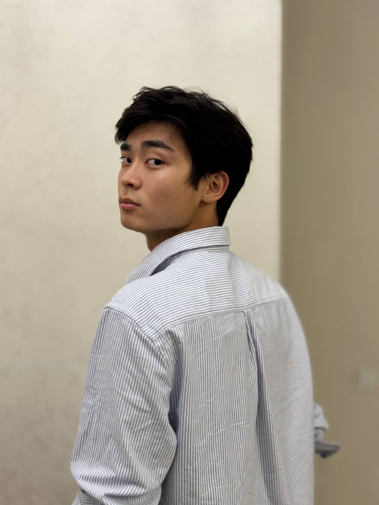
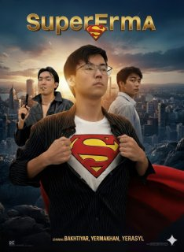
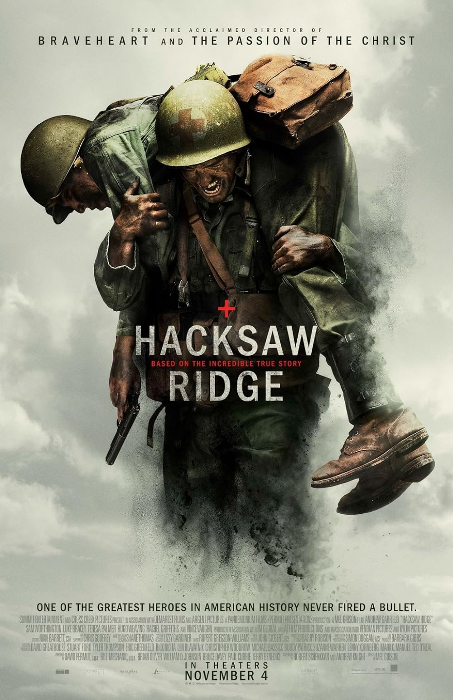
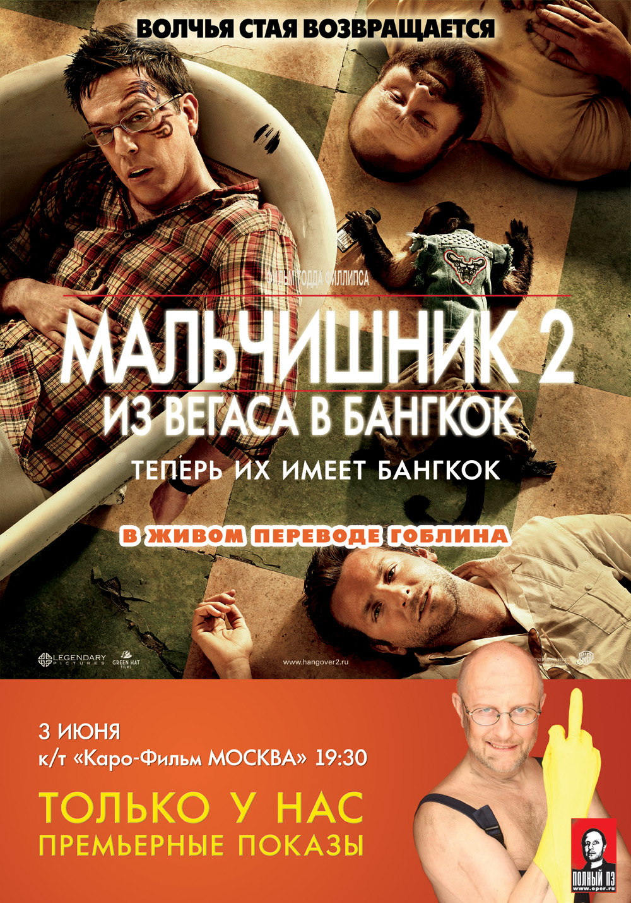
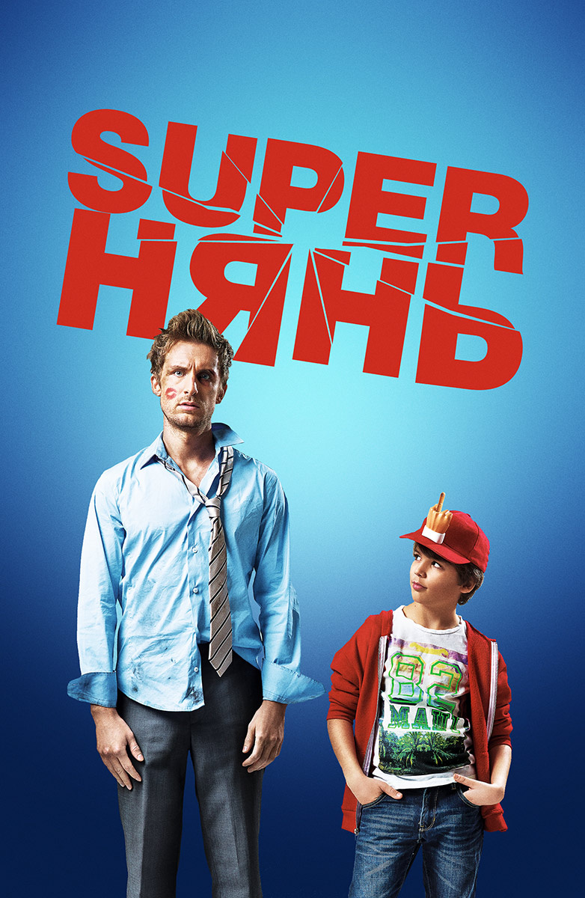

Kuanysh Baktiyar Ardakuly
Career: actor
Birthday: 14 May 2007
Born place: Aktobe, Kazakhstan
Height: 178cm
Wife: Tamiris Zhangazinova
Kuanysh Baktiyar Ardakuly was born on May 14, 2007, in the city of Aktobe, Republic of Kazakhstan. As the first son in his family, he showed an early interest in the arts, particularly cinema, which led him to pursue a career in acting.
Today, Kuanysh Baktiyar Ardakuly continues to build his career, constantly seeking new challenges and proving he is not a one-role actor.
Movies with this actor:






Social Networks of Actor:
Instagram